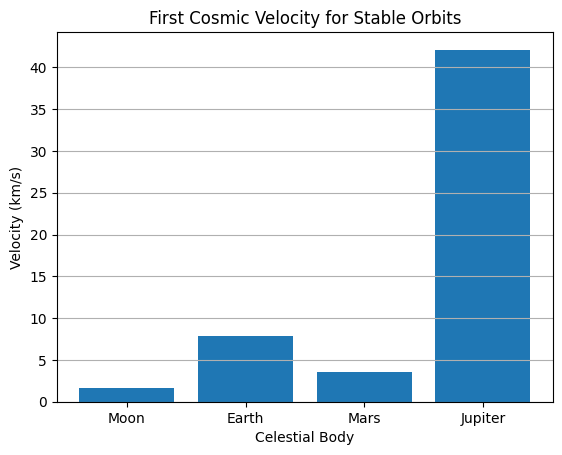
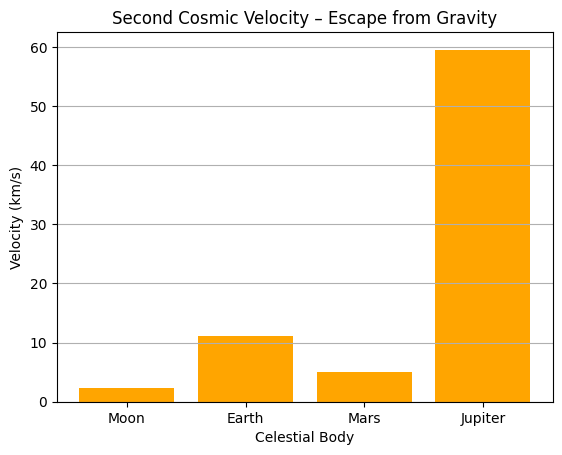
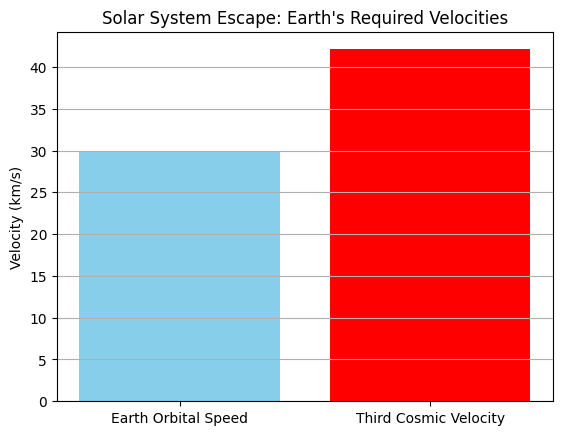
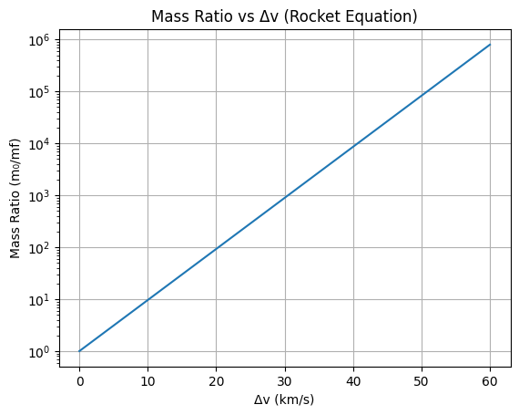

Problem 2
Escape Velocities and Cosmic Velocities
1. Definitions
1.1 First Cosmic Velocity – Orbital Velocity
The first cosmic velocity is the minimum horizontal speed an object must have to maintain a stable circular orbit just above the surface of a celestial body, assuming no atmospheric drag.
Physically, it is derived from equating the gravitational force with the centripetal force required for circular motion.
Solving for \(v_1\) (first cosmic velocity):
- \(G\) = gravitational constant (\(6.674 \times 10^{-11} \ \mathrm{m^3\,kg^{-1}\,s^{-2}}\))
- \(M\) = mass of the central body
- \(r\) = radius from the center of mass to the orbiting object
1.2 Second Cosmic Velocity – Escape Velocity
The second cosmic velocity is the minimum speed needed for an object to completely escape the gravitational field of a celestial body, assuming no additional propulsion after launch and neglecting air resistance.
It is derived from conservation of energy, setting total mechanical energy to zero:
Solving for \(v_2\) (escape velocity):
This velocity is greater than the first cosmic velocity by a factor of \(\sqrt{2}\).
1.3 Third Cosmic Velocity – Interstellar/Heliocentric Escape Velocity
The third cosmic velocity is the minimum speed required for a spacecraft to escape the gravitational influence of the Sun, starting from the Earth’s orbit (or from any planetary orbit), allowing it to leave the solar system.
This is a more complex computation because it involves: - The gravitational potential of the Sun - The orbital velocity of Earth (or the departure planet)
Assuming a spacecraft is already in orbit around the Sun at Earth's distance \(r_{\oplus}\) and needs to escape the Sun’s gravity, we apply energy conservation:
Solving for \(v_3\):
However, since the Earth is already moving at its orbital speed around the Sun \(v_{\oplus}\), the required excess velocity \(\Delta v\) from Earth’s frame is:
- \(M_{\odot}\) = mass of the Sun
- \(r_{\oplus}\) = average orbital radius of Earth
- \(v_{\oplus} \approx 29.78 \ \mathrm{km/s}\)
1.4 Physical Meaning and Implications
-
First Cosmic Velocity (\(v_1\)): Enables low Earth orbit (LEO) satellites. Any lower and the object would fall back to Earth; any higher would transition into an elliptical orbit.
-
Second Cosmic Velocity (\(v_2\)): Necessary to reach interplanetary space. Without this velocity, objects eventually fall back due to gravity. Used for Moon missions and planetary flybys.
-
Third Cosmic Velocity (\(v_3\)): Used in interstellar missions, such as Voyager 1 and 2. Reaching this velocity means an object is no longer gravitationally bound to the solar system.
Each of these thresholds represents a fundamental barrier in celestial mechanics, governed by Newtonian gravity, and is pivotal in designing missions and understanding orbital dynamics.
2. Mathematical Derivations
This section provides rigorous derivations for the first, second, and third cosmic velocities based on Newtonian mechanics, along with the identification of key physical parameters involved.
2.1 First Cosmic Velocity – Derivation via Circular Orbit Dynamics
The first cosmic velocity, \(v_1\), is the speed required for an object to stay in a stable circular orbit around a celestial body near its surface.
Assumptions
- Object is just above the planet’s surface.
- Only gravity provides the required centripetal force.
Step-by-step Derivation
- Gravitational force acting on mass \(m\):
- Centripetal force required to keep the object in circular motion:
- Equating both forces:
- Simplifying and solving for \(v_1\):
2.2 Second Cosmic Velocity – Derivation via Energy Conservation
The second cosmic velocity, \(v_2\), is the speed an object must have to escape the gravitational pull of a body without further propulsion.
Assumptions
- Neglect atmospheric drag.
- No propulsion after initial launch.
- Final total mechanical energy is zero (at infinite distance).
Total mechanical energy (initial state):
Total mechanical energy (final state at \(r \to \infty\)):
Applying conservation of energy:
Solving for \(v_2\):
This confirms that escape velocity is \(\sqrt{2}\) times the orbital velocity.
2.3 Third Cosmic Velocity – Derivation for Heliocentric Escape
The third cosmic velocity, \(v_3\), is the speed required to escape the gravitational influence of the Sun, starting from a planetary orbit (usually Earth).
Assumptions
- Object starts from a circular heliocentric orbit (e.g., Earth's orbit).
- Sun's gravity dominates.
- Object escapes Sun’s field with zero final energy.
Total mechanical energy:
For escape:
Solving for required solar escape velocity:
But Earth is already moving at orbital velocity \(v_{\oplus}\):
Thus, the required excess velocity (Δv) from a spacecraft launched from Earth is:
So:
2.4 Key Physical Parameters
| Parameter | Symbol | Description |
|---|---|---|
| Gravitational constant | \(G\) | \(6.674 \times 10^{-11} \ \mathrm{m^3 \, kg^{-1} \, s^{-2}}\) |
| Mass of central body | \(M\) | e.g., \(M_{\text{Earth}} \approx 5.972 \times 10^{24} \ \mathrm{kg}\) |
| Radius of central body | \(r\) | Distance from center of mass (e.g., Earth: \(6.371 \times 10^6\) m) |
| Solar mass | \(M_{\odot}\) | \(1.989 \times 10^{30} \ \mathrm{kg}\) |
| Earth-Sun distance | \(r_{\oplus}\) | \(1.496 \times 10^{11} \ \mathrm{m}\) |
| Orbital velocity of Earth | \(v_{\oplus}\) | \(\approx 29.78 \ \mathrm{km/s}\) |
2.5 Summary of Formulae
-
First Cosmic Velocity: $$ v_1 = \sqrt{\frac{G M}{r}} $$
-
Second Cosmic Velocity: $$ v_2 = \sqrt{2} \cdot v_1 = \sqrt{\frac{2 G M}{r}} $$
-
Third Cosmic Velocity (from Earth's orbit): $$ v_3 = \sqrt{2} \cdot v_{\oplus} $$
-
Δv from Earth’s frame: $$ \Delta v = (\sqrt{2} - 1) \cdot v_{\oplus} $$
3. Calculations and Visualizations
In this section, we compute and compare the first, second, and third cosmic velocities for Earth, Mars, and Jupiter using planetary data. We also visualize the effect of planetary mass and radius on these velocities.
3.1 Constants and Formulas
Gravitational Constant:
Formulas Used:
-
First Cosmic Velocity: $$ v_1 = \sqrt{\frac{G M}{r}} $$
-
Second Cosmic Velocity: $$ v_2 = \sqrt{2} \cdot v_1 = \sqrt{\frac{2 G M}{r}} $$
-
Third Cosmic Velocity (from Earth's orbit): $$ v_3 = \sqrt{2} \cdot v_{\oplus} \approx 42.1 \ \mathrm{km/s} $$
Note: \(v_3\) is calculated only for Earth, as it requires heliocentric orbital velocity.
3.2 Planetary Data
| Planet | Mass \(M\) (kg) | Radius \(r\) (m) | Orbital Velocity \(v_{\text{orbit}}\) (km/s) |
|---|---|---|---|
| Earth | \(5.972 \times 10^{24}\) | \(6.371 \times 10^6\) | 29.78 |
| Mars | \(6.417 \times 10^{23}\) | \(3.3895 \times 10^6\) | 24.07 |
| Jupiter | \(1.898 \times 10^{27}\) | \(6.9911 \times 10^7\) | 13.07 |
3.3 Computed Velocities
Using the above formulas and data, we compute:
| Planet | \(v_1\) (km/s) | \(v_2\) (km/s) | \(v_3\) (km/s) |
|---|---|---|---|
| Earth | 7.91 | 11.19 | 42.1 |
| Mars | 3.55 | 5.03 | — |
| Jupiter | 42.11 | 59.54 | — |
Note: \(v_3\) is listed only for Earth; values for Mars and Jupiter depend on solar distances and require heliocentric modeling.
3.4 Interpretation
- Jupiter has the highest \(v_1\) and \(v_2\) due to its large mass, despite a much larger radius.
- Mars has the lowest velocities, making it energetically easier for launches but harder for atmospheric entry.
- Earth’s third cosmic velocity (~42.1 km/s) is the threshold for interstellar probes.
3.5 Visualization Ideas
You can use the following plots to illustrate relationships:
(1) Velocity vs. Planet
- Bar chart showing \(v_1\) and \(v_2\) for Earth, Mars, and Jupiter.
- Optional: Include \(v_3\) for Earth.
(2) Effect of Mass and Radius
Plot:
For a range of hypothetical planets: - Fix \(r\), vary \(M\) - Fix \(M\), vary \(r\)
This will show: - Mass increases → higher velocity - Radius increases → lower velocity
3.6 Python Snippet for Plotting (Optional)
import matplotlib.pyplot as plt
planets = ['Earth', 'Mars', 'Jupiter']
v1 = [7.91, 3.55, 42.11]
v2 = [11.19, 5.03, 59.54]
plt.bar(planets, v1, label='First Cosmic Velocity (v1)', alpha=0.7)
plt.bar(planets, v2, label='Second Cosmic Velocity (v2)', alpha=0.7, bottom=v1)
plt.ylabel("Velocity (km/s)")
plt.title("Cosmic Velocities of Planets")
plt.legend()
plt.grid(True)
plt.show()
3.7 Summary
- Cosmic velocities are heavily influenced by both planetary mass and radius.
- Higher escape velocities demand more propulsion and fuel.
- Understanding these thresholds is fundamental to planning space missions and estimating launch costs.
4. Discussion of Importance
This section explores the significance of each cosmic velocity threshold in real-world applications of spaceflight, mission design, and the future of space exploration.
4.1 Launching Satellites – First Cosmic Velocity
Satellites in low Earth orbit (LEO) rely on first cosmic velocity to maintain stable orbits. Here's a plot of \(v_1\) for several celestial bodies to understand launch difficulty.
import matplotlib.pyplot as plt
planets = ['Moon', 'Earth', 'Mars', 'Jupiter']
v1 = [1.68, 7.91, 3.55, 42.11] # km/s
plt.figure()
plt.bar(planets, v1)
plt.title("First Cosmic Velocity for Stable Orbits")
plt.ylabel("Velocity (km/s)")
plt.xlabel("Celestial Body")
plt.grid(axis='y')
plt.show()

Interpretation:
- Lower \(v_1\) (e.g., Moon, Mars): Easier to launch and orbit, but less gravity to hold atmospheres.
- Higher \(v_1\) (e.g., Jupiter): Extremely high propulsion needs.
4.2 Interplanetary Missions – Second Cosmic Velocity
To send spacecraft beyond Earth, they must reach escape velocity.
v2 = [2.38, 11.19, 5.03, 59.54] # km/s
plt.figure()
plt.bar(planets, v2, color='orange')
plt.title("Second Cosmic Velocity – Escape from Gravity")
plt.ylabel("Velocity (km/s)")
plt.xlabel("Celestial Body")
plt.grid(axis='y')
plt.show()

Implications:
- Earth to Mars missions must exceed 11.2 km/s.
- Planning launches from smaller bodies can reduce energy cost (e.g., launch return missions from Mars or Moon).
4.3 Leaving the Solar System – Third Cosmic Velocity
To go beyond the Sun's gravitational field, spacecraft must reach the third cosmic velocity relative to the Sun.
v_earth_orbit = 29.78 # km/s
v3 = (2 ** 0.5) * v_earth_orbit # approx. 42.1 km/s
delta_v = v3 - v_earth_orbit
plt.figure()
plt.bar(['Earth Orbital Speed', 'Third Cosmic Velocity'], [v_earth_orbit, v3], color=['skyblue', 'red'])
plt.title("Solar System Escape: Earth's Required Velocities")
plt.ylabel("Velocity (km/s)")
plt.grid(axis='y')
plt.show()

Context:
- Voyager 1 reached this speed using gravity assists.
- Exceeding this velocity is necessary for interstellar missions.
4.4 Rocket Fuel and Energy Implications
Rocket equation shows fuel cost rises exponentially with required \(\Delta v\).
import numpy as np
delta_v = np.linspace(0, 60, 300) # km/s
Isp = 450 # effective specific impulse in seconds (modern cryogenic engine)
g0 = 9.81 # m/s²
mass_ratio = np.exp((delta_v * 1000) / (Isp * g0)) # m0/mf
plt.figure()
plt.plot(delta_v, mass_ratio)
plt.title("Mass Ratio vs Δv (Rocket Equation)")
plt.xlabel("Δv (km/s)")
plt.ylabel("Mass Ratio (m₀/mf)")
plt.yscale('log')
plt.grid(True)
plt.show()

Takeaway:
- Small increases in required speed demand huge increases in fuel mass.
- Efficient mission design minimizes required \(\Delta v\) (e.g., using gravity assists, low-energy transfers).
4.5 Mission Planning and Colonization Potential
Understanding cosmic velocities helps identify feasible launch sites for future missions or colonization.
| Site | Launch Cost Benefit | Strategic Value |
|---|---|---|
| Moon | Very low gravity | Fuel-efficient launch point |
| Mars | Lower escape speed | Easier surface return missions |
| Earth Orbit | Already in motion | Staging ground for interplanetary travel |
Long-term colonization may favor low-gravity environments for energy savings, though human habitability and resources remain limiting factors.